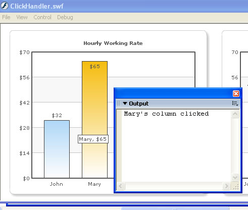

FusionCharts and Flash > Handling Click Events |
You can easily handle the click events for data points on the chart in your Flash movies. That is, whenever a user clicks on a column or line point or pie etc., you can be notified of the same in your Flash movie. Here we'll see how to do this. |
| Using asfunction to attain this |
To notify your flash code from FusionCharts, you need to use the asfunction command in Flash. The asfunction protocol is an additional protocol that is specific to Flash, which causes the link to invoke an ActionScript function. It takes the following parameters:
So, if you wish to call a function myFunction() when a column is clicked, you need to define the link for the same as under: <set name='John' value='49' link='asfunction:myFunction'/> The above column when clicked would now invoke the myFunction function defined in your Flash code. |
| Passing parameters using asfunction |
You can also pass 1 (one) string parameter using asfunction to your function as under: <set name='John' value='49' link='asfunction:myFunction,myPassedValue'/> When you now trace the value within the function as under, you'll see myPassedValue as output: function myFunction(strParam:String){ If you need to pass multiple parameters, one way would be to use a comma to separate each new value. Then String.split the parameter into individual values in the called function. This is a simple method that would only work with string values. Let's now put all this learning into a practical example to see its usage. |
| Creating a link handler example |
In this example, we'll create a copy of MultipleCharts.fla and save it as ClickHandler.fla. We'll define the link events for both the column and line chart. Each column or line anchor, when clicked, would call a different function, which in turn would just output the name of the set. In real life scenarios, you can do better things with this data. The actions in the new movie would now contain the following: |
/** // ------------- XML Data for the chart -------------- // |
As you can see above, we've defined the link for each column and line chart anchor using asfunction. The columns, when now clicked, will invoke columnClicked function and pass the set name of the column to the same. Similarly, the function name for line chart is pointClicked. Again, the line points would pass their respective names when clicked. In the body of these two functions, we've just traced out the values received as parameters. In your code, you could pass indexes of data and then deal with it the way you want to. When you now run this code and click on any column or line point, you'll see the name of column/line anchor in output window as under: |
|  |